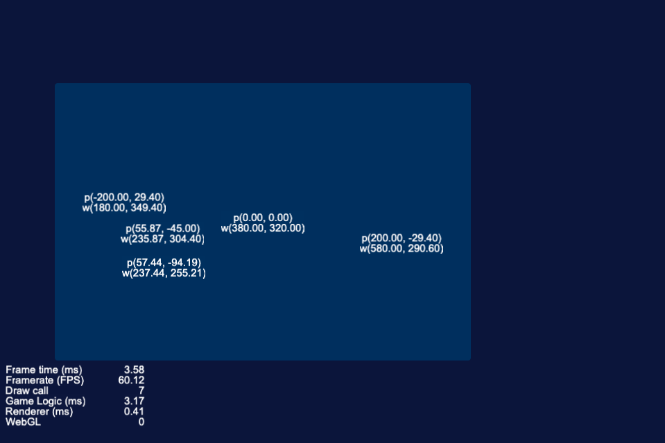

Cocos Creator 坐标与转换
ccc的坐标系
ccc提供了api，在世界坐标和本地坐标之间可以相互转换。
1 | let postion = node.position; // postion是在父节点中的坐标 |
node.position是本地坐标，也就是在父节点中的坐标。
让父节点调用convertToWorldSpaceAR方法，把节点的本地坐标转换为世界坐标。

p是本地坐标w是世界坐标
代码参考CCCTry
Cocos Creator 坐标与转换
https://blog.rustfisher.com/2020/12/29/CocosCreator/ccc-postion-and-cvt/